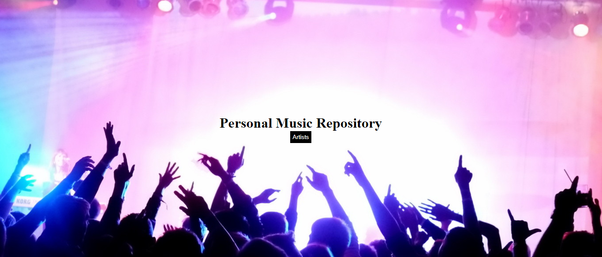
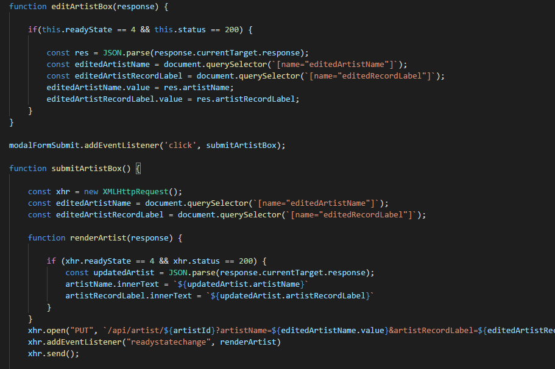
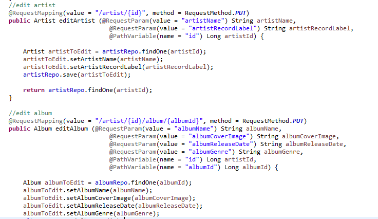

After four weeks of studying Java, I made this Virtual Pet game through test-driven-development. Players can interact with their pets, add pets to the Virtual Pet Shelter, and even adopt them and take them home, while maintaining their health and happiness.
I created the abstract Organic and Robotic classes, which both extend the VirtualPet class. The Robotic pet class, for example, inherits all the methods from the VirtualPet class. This leaves the parent class instance variables protected, for access by the child classes.
I created two interfaces, with empty methods, which are then overriden in the classes that implement the specific behaviors.
Supported by the Spring MVC, I created my first full-stack web application after seven weeks of studying Java and two weeks of studying the Thymeleaf template engine, HTML, CSS, and Javascript. This is a Reviews Website where the user can read lyrics and watch embedded music videos.
Using the Java Persistence API and H2, I created entities, as well as a One-to-Many relationship between each genre and the collection of reviews, all stored in repositories which extend the Crud Repository.
Using Spring, I defined the controller, autowired the repositories, and created four models which are mapped to four Thymeleaf templates.
After a week of instruction on Asynchronous JavaScript And XML, I created a music repository, where the user can add, delete, and edit artists, albums, and songs.
I created multiple functions to allow the user to open a modal box and edit input values, which are passed through the API endpoint. AJAX allows the user to interact with the website on one page, without refreshing.
I created multiple routes to the API Controller, passing collected data through request parameters, and hidden information through path variables.
